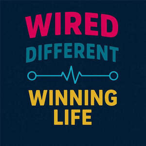

Trade Mark Journal No.2025/024 13 June 2025
UK00004212099 31 May 2025 (16,18,20,22,24,25,26,28,35,40,41,42,44)

- Class 16
- School yearbooks; School writing books; Year planners; Day planners.
- Class 18
- School book bags; Bags for school; School bags; Satchels (School -); School satchels; School knapsacks; Sports [Bags for -]; Randsels [Japanese school satchels]; School backpacks; Carriers for suits, shirts and dresses; Carriers for suits, for shirts and for dresses.
- Class 20
- Hangers [Coat -]; Chairs on skid frames; Bedding for nursery cots [other than bed linen]; Bedding for cots [other than bed linen]; Beds, bedding, mattresses, pillows and cushions; Bedding, except linen; Bed mattresses; Bath pillows; Pillows; Beds; Bumper guards for cribs, other than bed linen; Mattresses; Furniture incorporating beds; Feather beds; Sofa beds; Bumper guards for cots, other than bed linen; Scented pillows; Beds for animals; Bamboo pillows; Soft furnishings [cushions]; Infant beds; Beds of wood; Nap mats [cushions or mattresses]; Futon mattresses [other than childbirth mattresses]; Furniture and furnishings; Storage boxes for pillows [furniture]; Divan beds; Sleeping mats for camping [mattresses]; Cushions [furniture]; Bunk beds; Bed slats; Nursery furniture; Beds for pets; Foam camping mattresses; Camping mattresses; Latex pillows; Air pillows; Bedroom furniture; Beds for household pets; Foam mattresses; Bathroom furniture; Beds for birds; Mattress pads; Straw mattresses; Maternity pillows; Furniture being convertible into beds; Inflatable pet beds; Cat beds; Travel pillows; Furniture for bathrooms; Slatted furniture.
- Class 22
- Feathers for bedding.
- Class 24
- Quilts filled with half down; Fabrics for shirts; Hooded blankets; Blankets with sleeves; Jersey fabrics for clothing; Shirt fabrics; Comforters (bedding); Quilted blankets [bedding]; Quilt bedding mats; Textile goods for use as bedding; Disposable bedding of textile; Bed linen and blankets; Comforters for beds; Linens; Textile fabrics for use in the manufacture of bedding; Bed clothes and blankets; Disposable bedding of paper; Crib bumpers [bed linen]; Bed blankets; Blankets (Bed -); Bed linen; Linen for the bed; Linen (Bed -); Cot bumpers [bed linen]; Canopies (bed linen); Silk bed blankets; Bed clothes; Ticks (mattress and pillow coverings); Bed blankets made of cotton; Valances for beds; Crib sheets; Bedsheets; Fabric bed valances; Bedspreads; Household linens; Bed coverings; Bed linen of paper; Valanced bed sheets; Coverlets [bedspreads]; Bath sheets (towels); Bed linen and table linen; Fitted bed sheets; Textile piece goods for making bedding covers; Bed quilts; Bath linen, except clothing; Bed valances; Duvets; Cot sheets; Sofa blankets; Cot blankets; Cotton blankets; Woven fabrics for use in the manufacture of clothing for use in clean rooms; Textile fabrics for use in the manufacture of beds; Furnishing fabrics; Bath linen; Silk fabrics for furniture; Towels of textiles; Bed sheets of plastic [not being incontinence sheets]; Bed sheets of plastic, not being incontinence sheets; Furnishing and upholstery fabrics; Infants' bed linen; Bed pads; Bed sheets of paper; Fabrics for the manufacture of furnishings; Protective loose covers for mattresses and furniture; Window furnishing fabrics; Bed canopies; Bed blankets made of man-made fibres; Pillowcases; Pillowcases [pillow slips]; Fire-retardant textile shower curtains; Bath sheets; Textiles for furnishings; Woven fabrics for furniture; Flat bed sheets; Bed linen made of non-woven textile material; Linen; Bathroom towels.
- Class 25
- Jackets, Clothing, Hats, Gloves, Clothing for wear in wrestling games, articles of clothing made of leather, shorts, chaps, three piece suits, gloves as clothings, clothing for leisure wear, paper hats for use as clothing items, stuff jackets, foulards, party hats, aprons, articles of clothings, jerseys, wristbands, article of clothings made of hides, paper hats, garments for protecting clothings, jackets, jackets being sports clothings, corsets, parts of clothing, footwear and headgear, headbands, headbands for clothings, sweatshirts ; Plus fours; Night shirts; Yoga tops; Sports [Boots for -]; Pants (Am.); Sweatshirts; Hooded sweatshirts; Hoodies; T-shirts; Short-sleeved T-shirts; Sweaters; Turtleneck shirts; Long-sleeved shirts; Shirts; V-neck sweaters; Tee-shirts; Turtleneck sweaters; Hooded pullovers; Short-sleeved shirts; Turtleneck pullovers; Sweatpants; Fleece pullovers; Pullovers; Short-sleeve shirts; Hooded sweat shirts; Corduroy shirts; Cardigans; Fleece jackets; Sleeved jackets; Knit shirts; Sleeveless pullovers; Jumpers [sweaters]; Beanies; Sleeveless jackets; Quilted jackets [clothing]; Printed t-shirts; Knit jackets; Jackets [clothing]; Tank-tops; Polo sweaters; Jumpers [pullovers]; Camouflage shirts; Jackets; Denim jackets; Sports shirts; Moisture-wicking sports shirts; Fleece shorts; Jerseys [clothing]; Yoga shirts; Football shirts; Collared shirts; Mock turtleneck shirts; Jackets being sports clothing; Sweatsuits; Sweat shirts; Open-necked shirts; Turtlenecks; Sleeveless jerseys; Parkas; Soccer shirts; Button-front aloha shirts; Fleece vests; Tracksuits; Men's and women's jackets, coats, trousers, vests; Mock turtleneck sweaters; Overshirts; Shorts [clothing]; Shirts for suits; Woven shirts; Scarves; Undershirts; Casual shirts; Sports shirts with short sleeves; Aloha shirts; Jackets (Stuff -) [clothing]; Stuff jackets [clothing]; Sheepskin jackets; Golf shirts; Anoraks [parkas]; Cashmere scarves; Beanie hats; Embroidered clothing; Sleep shirts; Polar fleece jackets; Hunting shirts; Sport shirts; Sweat jackets; Dress shirts; Camouflage jackets; Maternity shirts; Polo shirts; Tennis shirts; Sports jackets; Crew neck sweaters; Blouson jackets; Fleece tops; Fishing shirts; Tennis pullovers; Snowboard jackets; Turtleneck tops; Playsuits [clothing]; Headbands [clothing]; Headbands for clothing; Padded jackets; Jeans; Rugby shirts; Leggings [trousers]; Tops [clothing]; Denims [clothing]; Knitwear [clothing]; Padded shirts for athletic use; Casual jackets; Windproof jackets; Tracksuit tops; Cashmere clothing; Hooded tops; Blouses; Fur jackets; Jerseys; Bandanas; Hooded bathrobes; Fur coats and jackets; Quilted vests; Reversible jackets; Snoods [scarves]; Ramie shirts; Wind-resistant jackets; Hoods [clothing]; Nightshirts; Suede jackets; Windcheaters; Gloves for apparel; Pique shirts; Scarfs; Weatherproof jackets; Sundresses; Bed jackets; Moisture-wicking sports pants; Cowls [clothing]; Wristbands [clothing]; Aprons [clothing]; Shirts and slips; Linen clothing; Plush clothing; Bed socks.
- Class 26
- Bags [Zip fasteners for -]; Embroidered patches for clothing.
- Class 28
- Toys simulating objects used by adults in day to day activity; Gym balls for yoga; Nine man's morris sets; Yoga blocks; Rosin used by athletes.
- Class 35
- Book club services retailing books to its members; School fee accounting services; School fee cost accounting services; Sales promotions at point of purchase or sale, for others; Presentation of companies and their goods and services on the Internet; Auctioneering provided on the internet; Retail services connected with the sale of clothing and clothing accessories.
- Class 40
- 3 D reproduction services; T-shirt embroidering services; Tee-shirt embroidering services.
- Class 41
- Ballet classes; Teaching at junior high schools; Linguistic classes; Gym activity classes; Exercise classes; Educating at senior high schools; Singing classes; Arranging of classes; Providing courses of instruction at high school level; Teaching at elementary schools; Conducting of classes; Providing courses of instruction at college level; Conducting fitness classes; Tutoring at cram schools; Provision of dance classes; Exercise and fitness classes; Conducting classes in weight reduction; Education services in the nature of courses at the university level; Conducting distance learning instruction at the college level; Providing courses of instruction at post-graduate level; Arranging and conducting of day school courses for adults; Production of course material distributed at professional lectures; Conducting distance learning instruction at the graduate level; Conducting classes in exercise; Production of course material distributed at vocational lectures; Conducting classes in nutrition; Academic mentoring of school age children; Production of course material distributed at professional courses; Conducting classes in weight control; Production of course material distributed at professional seminars; Conducting distance learning instruction at the university level; Production of course material distributed at vocational courses; Educating at university or colleges; Production of course material distributed at vocational seminars; Production of course material distributed at management lectures; Educational services provided by senior high schools; Organisation of examinations to grade level of achievement; Conducting physical fitness conditioning classes; Production of course material distributed at management courses; Production of course material distributed at management seminars; Conducting distance learning instruction at the secondary level; Conducting distance learning instruction at the primary level; Arranging and conducting of classes; Boarding school education; School services for the teaching of art; School services for the teaching of languages; Educating at universities or colleges; Boarding school services; Ballet schools; Obedience school training for animals; Pilates instruction; School services; School services for the teaching of construction draughting; Engineering training college services; Conducting of instructional, educational and training courses for young people and adults; Ballet lessons; Night clubs; Teaching by correspondence courses; Music tuition by correspondence courses; Instruction in group exercise; Conducting training sessions on physical fitness online; Arranging for students to participate in educational courses; Presentation of live performances by a musical group; Producing and conducting exercises for music classes and programmes; Yoga instruction; Tuition in gymnastics; Tuition in oenology; Movement tuition for pre-school children; Training of swimming teachers; Rental of equipment for use at gymnastic events; Dance instruction for adults; Tuition in herbalism; Beauty school services; Adult tuition; Motoring school services; Dance schools; Pre-school teaching; Rental of equipment for use at athletic events; Teacher training services; Education academy services for teaching art history; Training in yoga; Physical fitness instruction for adults and children; Training of sports teachers; Teaching academy services.
- Class 42
- Design of logos for t-shirts.
- Class 44
- Individual and group psychology services.
Concept health Technologies Limited